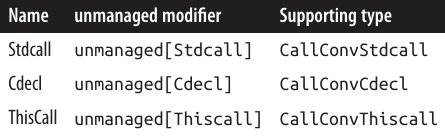

فصل بیست و چهارم: یکپارچهسازی با Native و COM
این فصل توضیح میدهد چگونه با کتابخانههای Native (غیرمدیریتشده) Dynamic-Link (DLL) و کامپوننتهای Component Object Model (COM) یکپارچه شوید. مگر اینکه خلاف آن ذکر شده باشد، انواع دادهای که در این فصل آمدهاند در فضای نام System یا System.Runtime.InteropServices وجود دارند.
فراخوانی DLLهای Native 📦
P/Invoke، کوتاه شدهی Platform Invocation Services، به شما اجازه میدهد به توابع، ساختارها و callbackها در DLLهای غیرمدیریتشده (کتابخانههای مشترک در Unix) دسترسی پیدا کنید.
برای مثال، تابع MessageBox که در DLL ویندوز user32.dll تعریف شده است به شکل زیر است:
int MessageBox(HWND hWnd, LPCTSTR lpText, LPCTSTR lpCaption, UINT uType);
میتوانید این تابع را مستقیماً با تعریف یک متد static با همان نام، استفاده از کلمه کلیدی extern و افزودن attribute DllImport فراخوانی کنید:
using System;
using System.Runtime.InteropServices;
MessageBox(IntPtr.Zero,
"Please do not press this again.", "Attention", 0);
[DllImport("user32.dll")]
static extern int MessageBox(IntPtr hWnd, string text, string caption, int type);
کلاسهای MessageBox در فضای نامهای System.Windows و System.Windows.Forms خودشان متدهای مشابه غیرمدیریتشده را فراخوانی میکنند.
نمونهای از DllImport برای Ubuntu Linux:
Console.WriteLine($"User ID: {getuid()}");
[DllImport("libc")]
static extern uint getuid();
CLR شامل یک marshaler است که میداند چگونه پارامترها و مقادیر بازگشتی بین انواع .NET و انواع غیرمدیریتشده تبدیل شوند. در مثال ویندوز، پارامترهای int مستقیماً به عدد صحیح چهار بایتی که تابع انتظار دارد تبدیل میشوند و پارامترهای string به آرایههای Unicode پایانیافته با null (UTF-16) تبدیل میشوند.
IntPtr یک struct است که برای پوشش یک handle غیرمدیریتشده طراحی شده؛ در پلتفرمهای ۳۲ بیتی، ۳۲ بیت و در پلتفرمهای ۶۴ بیتی، ۶۴ بیت عرض دارد. تبدیل مشابهی در Unix نیز انجام میشود. (از C# 9 به بعد، میتوانید از نوع nint هم استفاده کنید که به IntPtr نگاشت میشود.)
Marshaling انواع و پارامترها ⚙️
Marshaling انواع رایج
در سمت غیرمدیریتشده، ممکن است برای نمایش یک نوع داده بیش از یک روش وجود داشته باشد.
برای مثال، یک رشته (string) میتواند شامل کاراکترهای تکبایتی ANSI یا کاراکترهای Unicode UTF-16 باشد و طول آن میتواند با پیشوند مشخص شود، یا null-terminated باشد، یا طول ثابت داشته باشد.
با استفاده از attribute MarshalAs میتوانید به marshaler CLR مشخص کنید کدام حالت استفاده شود تا تبدیل صحیح انجام گیرد. مثال:
[DllImport("...")]
static extern int Foo([MarshalAs(UnmanagedType.LPStr)] string s);
enum UnmanagedType شامل تمام انواع Win32 و COM است که marshaler آنها را میشناسد. در این مثال، marshaler به ترجمه به LPStr دستور داده شد، که یک رشته تکبایتی ANSI پایانیافته با null است.
در سمت .NET نیز شما میتوانید نوع دادهای که استفاده میکنید را انتخاب کنید. Handles غیرمدیریتشده، برای مثال، میتوانند به IntPtr، int، uint، long یا ulong نگاشت شوند.
بیشتر handles غیرمدیریتشده یک آدرس یا pointer را در بر دارند و بنابراین برای سازگاری با سیستمعاملهای ۳۲ و ۶۴ بیتی باید به IntPtr نگاشت شوند. یک مثال معمول، HWND است.
اغلب در توابع Win32 و POSIX، با پارامترهای عدد صحیح مواجه میشوید که مجموعهای از constants را میپذیرند، که در فایل هدر C++ مانند WinUser.h تعریف شدهاند. به جای تعریف آنها به عنوان constants ساده در C#، میتوانید آنها را در یک enum تعریف کنید. استفاده از enum باعث تمیزتر شدن کد و افزایش ایمنی نوعی میشود. نمونهای در بخش «Shared Memory» در صفحه ۹۹۵ ارائه شده است.
هنگام نصب Microsoft Visual Studio، حتماً فایلهای هدر C++ را نصب کنید—حتی اگر هیچ مورد دیگری از دسته C++ انتخاب نکرده باشید. اینجا جایی است که تمام constants بومی Win32 تعریف شدهاند. سپس میتوانید همه فایلهای هدر را با جستجوی *.h در دایرکتوری برنامه Visual Studio پیدا کنید.
در Unix، استاندارد POSIX نامهای constants را تعریف میکند، اما پیادهسازیهای فردی سیستمهای Unix سازگار با POSIX ممکن است مقادیر عددی متفاوتی برای این constants اختصاص دهند. باید از مقدار عددی صحیح برای سیستمعامل خود استفاده کنید. همچنین، POSIX یک استاندارد برای structهای استفادهشده در فراخوانی interop تعریف میکند. ترتیب فیلدها در struct توسط استاندارد ثابت نشده و ممکن است پیادهسازی Unix فیلدهای اضافی اضافه کند. فایلهای هدر C++ که توابع و انواع را تعریف میکنند معمولاً در /usr/include یا /usr/local/include نصب میشوند.
دریافت رشتهها از کد غیرمدیریتشده به .NET نیازمند مدیریت حافظه است. marshaler به طور خودکار این کار را انجام میدهد اگر متد خارجی را با StringBuilder به جای string اعلام کنید، مانند:
StringBuilder s = new StringBuilder(256);
GetWindowsDirectory(s, 256);
Console.WriteLine(s);
[DllImport("kernel32.dll")]
static extern int GetWindowsDirectory(StringBuilder sb, int maxChars);
در Unix نیز مشابه عمل میکند. مثال زیر تابع getcwd را فراخوانی میکند تا مسیر جاری را بازگرداند:
var sb = new StringBuilder(256);
Console.WriteLine(getcwd(sb, sb.Capacity));
[DllImport("libc")]
static extern string getcwd(StringBuilder buf, int size);
اگرچه استفاده از StringBuilder راحت است، اما کمی ناکارآمد است زیرا CLR باید تخصیصهای حافظه اضافی و کپیکردنها را انجام دهد. در نقاط حساس عملکرد، میتوانید با استفاده از char[] این سربار را کاهش دهید:
[DllImport("kernel32.dll", CharSet = CharSet.Unicode)]
static extern int GetWindowsDirectory(char[] buffer, int maxChars);
توجه کنید که باید CharSet را در attribute DllImport مشخص کنید. همچنین پس از فراخوانی تابع، باید رشته خروجی را به طول مناسب برش دهید. میتوانید این کار را با حداقل تخصیص حافظه با استفاده از array pooling (صفحه ۵۹۹) انجام دهید:
string GetWindowsDirectory()
{
var array = ArrayPool<char>.Shared.Rent(256);
try
{
int length = GetWindowsDirectory(array, 256);
return new string(array, 0, length).ToString();
}
finally { ArrayPool<char>.Shared.Return(array); }
}
(البته، این مثال صرفاً آموزشی است و شما میتوانید مسیر Windows را از طریق متد داخلی Environment.GetFolderPath دریافت کنید.)
اگر مطمئن نیستید چگونه یک متد خاص Win32 یا Unix را فراخوانی کنید، معمولاً با جستجوی نام تابع و DllImport در اینترنت، نمونهای پیدا خواهید کرد. برای ویندوز، سایت http://www.pinvoke.net یک ویکی است که هدف آن مستندسازی تمام signatureهای Win32 است.
Marshaling کلاسها و Structها 📦
گاهی اوقات نیاز دارید یک struct را به یک متد غیرمدیریتشده ارسال کنید. برای مثال، تابع GetSystemTime در API ویندوز به شکل زیر تعریف شده است:
void GetSystemTime(LPSYSTEMTIME lpSystemTime);
LPSYSTEMTIME مطابق با این struct در C است:
typedef struct _SYSTEMTIME {
WORD wYear;
WORD wMonth;
WORD wDayOfWeek;
WORD wDay;
WORD wHour;
WORD wMinute;
WORD wSecond;
WORD wMilliseconds;
} SYSTEMTIME, *PSYSTEMTIME;
برای فراخوانی GetSystemTime، باید یک کلاس یا struct در .NET تعریف کنیم که با این struct در C مطابقت داشته باشد:
using System;
using System.Runtime.InteropServices;
[StructLayout(LayoutKind.Sequential)]
class SystemTime
{
public ushort Year;
public ushort Month;
public ushort DayOfWeek;
public ushort Day;
public ushort Hour;
public ushort Minute;
public ushort Second;
public ushort Milliseconds;
}
Attribute StructLayout به marshaler میگوید چگونه هر فیلد را به معادل غیرمدیریتشدهاش نگاشت کند. LayoutKind.Sequential به این معنی است که فیلدها به ترتیب پشت سر هم و روی مرزهای pack-size قرار میگیرند (که بعداً توضیح داده میشود)، درست مانند struct در C. نام فیلدها اهمیت ندارد، بلکه ترتیب فیلدها مهم است.
حالا میتوانیم GetSystemTime را فراخوانی کنیم:
SystemTime t = new SystemTime();
GetSystemTime(t);
Console.WriteLine(t.Year);
[DllImport("kernel32.dll")]
static extern void GetSystemTime(SystemTime t);
بهطور مشابه، در Unix:
Console.WriteLine(GetSystemTime());
static DateTime GetSystemTime()
{
DateTime startOfUnixTime = new DateTime(1970, 1, 1, 0, 0, 0, 0, System.DateTimeKind.Utc);
Timespec tp = new Timespec();
int success = clock_gettime(0, ref tp);
if (success != 0) throw new Exception("Error checking the time.");
return startOfUnixTime.AddSeconds(tp.tv_sec).ToLocalTime();
}
[DllImport("libc")]
static extern int clock_gettime(int clk_id, ref Timespec tp);
[StructLayout(LayoutKind.Sequential)]
struct Timespec
{
public long tv_sec; /* ثانیه */
public long tv_nsec; /* نانوثانیه */
}
در هر دو زبان C و C#، فیلدهای یک شیء در فاصلهای از آدرس آن شیء قرار دارند. تفاوت در این است که در برنامه C#، CLR این offset را با استفاده از token فیلد پیدا میکند؛ اما در C، نام فیلد مستقیماً به offset کامپایل میشود.
برای مثال، در C، wDay فقط یک token است که نشان میدهد چه چیزی در آدرس یک نمونه SystemTime به اضافه ۲۴ بایت قرار دارد.
برای سرعت دسترسی، هر فیلد در offsetی قرار میگیرد که مضربی از اندازه فیلد است. این ضریب حداکثر به x بایت محدود است، که x اندازه pack است. در پیادهسازی فعلی، pack پیشفرض ۸ بایت است، بنابراین یک struct شامل sbyte و سپس یک long (۸ بایت) به ۱۶ بایت اشغال میشود و ۷ بایت بعد از sbyte هدر میرود. با تعیین اندازه pack از طریق ویژگی Pack در attribute StructLayout میتوان این هدر رفت را کاهش یا حذف کرد. برای مثال، با pack برابر ۱، همان struct تنها ۹ بایت اشغال میکند. میتوانید packهای ۱، ۲، ۴، ۸ یا ۱۶ بایت تعیین کنید.
Attribute StructLayout همچنین اجازه میدهد offsetهای صریح فیلدها را مشخص کنید (صفحه ۹۹۴: «Simulating a C Union»).
In و Out Marshaling ↔️
در مثال قبلی، SystemTime به صورت کلاس پیادهسازی شد. میتوانستیم به جای آن struct انتخاب کنیم—مشروط بر اینکه GetSystemTime با پارامتر ref یا out اعلام شود:
[DllImport("kernel32.dll")]
static extern void GetSystemTime(out SystemTime t);
در اکثر موارد، semantics پارامترهای جهتدار C# با متدهای خارجی یکسان است:
- پارامترهای Pass-by-value کپی میشوند،
- پارامترهای
refکپی در/خارج میشوند، - پارامترهای
outکپی خروجی میشوند.
با این حال، برای برخی نوعها که تبدیل خاصی دارند، استثنا وجود دارد. برای مثال، کلاسهای آرایه و StringBuilder هنگام خروج از تابع نیاز به کپی دارند، بنابراین رفتارشان in/out است. گاهی اوقات مفید است که این رفتار را با attributes In و Out بازنویسی کنیم.
برای مثال، اگر یک آرایه باید فقط خواندنی باشد، modifier in مشخص میکند که فقط کپی ورودی آرایه به تابع انجام شود، نه خروجی آن:
static extern void Foo([In] int[] array);
Calling Conventions ⚙️
متدهای غیرمدیریتشده آرگومانها و مقادیر بازگشتی را از طریق stack و (اختیاری) CPU registers دریافت میکنند. از آنجا که چندین روش برای انجام این کار وجود دارد، پروتکلهای مختلفی شکل گرفتهاند که به آنها calling conventions گفته میشود.
CLR در حال حاضر از سه calling convention پشتیبانی میکند:
StdCallCdeclThisCall
به طور پیشفرض، CLR از calling convention پیشفرض پلتفرم استفاده میکند (convention استاندارد برای آن پلتفرم). در ویندوز، این convention برابر با StdCall است و در لینوکس x86 برابر با Cdecl.
اگر یک متد غیرمدیریتشده از این پیشفرض پیروی نکند، میتوانید به صورت صریح calling convention آن را مشخص کنید:
[DllImport("MyLib.dll", CallingConvention=CallingConvention.Cdecl)]
static extern void SomeFunc(...);
توجه داشته باشید که نام somewhat misleading CallingConvention.WinApi به convention پیشفرض پلتفرم اشاره دارد.
فراخوانی بازگشتی از کد غیرمدیریتشده 🔄
C# همچنین اجازه میدهد توابع خارجی، کد C# را فراخوانی کنند، از طریق callbacks. دو روش برای پیادهسازی callbacks وجود دارد:
- از طریق function pointers
- از طریق delegates
برای مثال، تابع زیر در User32.dll ویندوز، تمام handles پنجرههای سطح بالا را enumerate میکند:
BOOL EnumWindows(WNDENUMPROC lpEnumFunc, LPARAM lParam);
WNDENUMPROC یک callback است که برای هر handle پنجره به ترتیب فراخوانی میشود (یا تا زمانی که callback false بازگرداند). تعریف آن به شکل زیر است:
BOOL CALLBACK EnumWindowsProc(HWND hwnd, LPARAM lParam);
Callbacks با Function Pointers 🔹
از C# 9، سادهترین و سریعترین گزینه—وقتی callback شما یک متد static است—استفاده از function pointer است. در مورد callback WNDENUMPROC، میتوان از function pointer زیر استفاده کرد:
delegate*<IntPtr, IntPtr, bool>
این یک تابع را نشان میدهد که دو آرگومان IntPtr میگیرد و bool برمیگرداند. سپس میتوانید با استفاده از عملگر & آن را به یک متد static اختصاص دهید:
using System;
using System.Runtime.InteropServices;
unsafe
{
EnumWindows(&PrintWindow, IntPtr.Zero);
[DllImport("user32.dll")]
static extern int EnumWindows(delegate*<IntPtr, IntPtr, bool> hWnd, IntPtr lParam);
static bool PrintWindow(IntPtr hWnd, IntPtr lParam)
{
Console.WriteLine(hWnd.ToInt64());
return true;
}
}
با function pointers، callback باید یک متد static باشد (یا یک static local function همانند مثال بالا).
UnmanagedCallersOnly ⚡
میتوانید با اعمال unmanaged به declaration function pointer و attribute [UnmanagedCallersOnly] به متد callback، عملکرد را بهبود دهید:
using System;
using System.Runtime.CompilerServices;
using System.Runtime.InteropServices;
unsafe
{
EnumWindows(&PrintWindow, IntPtr.Zero);
[DllImport("user32.dll")]
static extern int EnumWindows(delegate* unmanaged<IntPtr, IntPtr, byte> hWnd, IntPtr lParam);
[UnmanagedCallersOnly]
static byte PrintWindow(IntPtr hWnd, IntPtr lParam)
{
Console.WriteLine(hWnd.ToInt64());
return 1;
}
}
این attribute به CLR اطلاع میدهد که متد PrintWindow تنها از کد غیرمدیریتشده قابل فراخوانی است و اجازه میدهد runtime برخی shortcuts را اعمال کند. توجه کنید که نوع بازگشتی متد از bool به byte تغییر کرده است، زیرا متدهایی که [UnmanagedCallersOnly] دارند، تنها میتوانند از blittable value types در signature استفاده کنند.
Blittable types آنهایی هستند که نیاز به marshaling خاص ندارند، زیرا در محیطهای مدیریتشده و غیرمدیریتشده به یک شکل نمایش داده میشوند. این نوعها شامل:
- انواع صحیح ابتدایی (primitive integral types)
floatوdouble- structهایی که تنها شامل blittable types هستند
نوع char نیز blittable است، اگر بخشی از structی باشد که attribute StructLayout آن CharSet.Unicode را مشخص کرده باشد:
[StructLayout(LayoutKind.Sequential, CharSet=CharSet.Unicode)]
Nondefault Calling Conventions ⚙️
به طور پیشفرض، کامپایلر فرض میکند که callback غیرمدیریتشده از calling convention پیشفرض پلتفرم پیروی میکند. اگر اینگونه نباشد، میتوانید به صورت صریح calling convention آن را با استفاده از پارامتر CallConvs در attribute [UnmanagedCallersOnly] مشخص کنید:
[UnmanagedCallersOnly(CallConvs = new[] { typeof(CallConvStdcall) })]
static byte PrintWindow(IntPtr hWnd, IntPtr lParam) ...
همچنین باید نوع function pointer را با درج یک modifier خاص بعد از کلمه کلیدی unmanaged بهروزرسانی کنید:
delegate* unmanaged[Stdcall]<IntPtr, IntPtr, byte> hWnd, IntPtr lParam);
کامپایلر اجازه میدهد هر شناسهای (مثل XYZ) را داخل کروشهها قرار دهید، مشروط بر اینکه یک نوع .NET به نام CallConvXYZ وجود داشته باشد که توسط runtime درک شود و با چیزی که هنگام اعمال [UnmanagedCallersOnly] مشخص کردهاید مطابقت داشته باشد. این ویژگی به مایکروسافت اجازه میدهد در آینده calling conventions جدید اضافه کند.
در این مثال، ما StdCall را مشخص کردیم، که calling convention پیشفرض ویندوز است (در لینوکس x86، پیشفرض Cdecl است).
در ادامه، تمام گزینههایی که در حال حاضر پشتیبانی میشوند ارائه شدهاند:

Callbacks با Delegates 🔄
میتوان callbacks غیرمدیریتشده را با استفاده از delegates نیز پیادهسازی کرد. این روش در تمام نسخههای C# کار میکند و اجازه میدهد callbackهایی که به متدهای instance اشاره دارند نیز استفاده شوند.
برای انجام این کار، ابتدا یک نوع delegate با signature مشابه callback تعریف میکنیم. سپس میتوان یک نمونه delegate را به متد خارجی پاس داد:
class CallbackFun
{
delegate bool EnumWindowsCallback(IntPtr hWnd, IntPtr lParam);
[DllImport("user32.dll")]
static extern int EnumWindows(EnumWindowsCallback hWnd, IntPtr lParam);
static bool PrintWindow(IntPtr hWnd, IntPtr lParam)
{
Console.WriteLine(hWnd.ToInt64());
return true;
}
static readonly EnumWindowsCallback printWindowFunc = PrintWindow;
static void Main() => EnumWindows(printWindowFunc, IntPtr.Zero);
}
استفاده از delegates برای callbacks غیرمدیریتشده ironically unsafe است، زیرا ممکن است callback بعد از خارج شدن نمونه delegate از scope رخ دهد و در این صورت delegate واجد شرایط garbage collection میشود. این میتواند منجر به شدیدترین نوع exception در runtime شود—یکی بدون stack trace مفید.
در مورد callbackهای متد static، میتوان با اختصاص نمونه delegate به یک read-only static field از این مشکل جلوگیری کرد (همانند مثال بالا). اما برای callbackهای متد instance، این روش کافی نیست و باید با دقت کدنویسی کنید تا حداقل یک reference به نمونه delegate برای مدت زمان هر callback احتمالی حفظ شود. حتی در این حالت، اگر یک باگ در سمت غیرمدیریتشده وجود داشته باشد—که callback را بعد از اینکه به آن گفتهاید اجرا کند—ممکن است همچنان با یک exception غیرقابل ردیابی مواجه شوید. یک راهکار این است که برای هر تابع غیرمدیریتشده، یک نوع delegate منحصر به فرد تعریف کنید؛ این کار در تشخیص مشکلات کمک میکند، زیرا نوع delegate در exception گزارش میشود.
میتوانید calling convention callback را از پیشفرض پلتفرم تغییر دهید با اعمال attribute [UnmanagedFunctionPointer] روی delegate:
[UnmanagedFunctionPointer(CallingConvention.Cdecl)]
delegate void MyCallback(int foo, short bar);
شبیهسازی C Union 🔧
هر فیلد در یک struct فضای کافی برای ذخیره داده خود دارد.
فرض کنید structی شامل یک int و یک char داریم. int احتمالاً از offset صفر شروع میشود و حداقل چهار بایت فضا دارد. بنابراین char حداقل از offset ۴ شروع میشود. اگر به هر دلیلی char از offset ۲ شروع شود، مقدار int تغییر میکند. عجیب است، اما زبان C نوعی variation از struct به نام union دارد که دقیقاً همین کار را انجام میدهد.
در C# میتوان این کار را با LayoutKind.Explicit و attribute FieldOffset شبیهسازی کرد.
ممکن است سخت باشد موردی پیدا کنید که این کاربردی باشد. اما فرض کنید میخواهید یک نت موسیقی را روی یک synthesizer خارجی پخش کنید. Windows Multimedia API یک تابع برای این کار از طریق پروتکل MIDI فراهم میکند:
[DllImport("winmm.dll")]
public static extern uint midiOutShortMsg(IntPtr handle, uint message);
آرگومان دوم، message، مشخص میکند چه نتی پخش شود. مشکل در ساخت این عدد ۳۲ بیتی unsigned است: این عدد به بایتهایی تقسیم میشود که نماینده کانال MIDI، نت، و سرعت ضربه هستند.
راه حل کلاسیک، استفاده از عملگرهای بیتی <<, >>, &, | برای تبدیل بین بایتها و عدد ۳۲ بیتی است. اما روش سادهتر، تعریف یک struct با layout صریح است:
[StructLayout(LayoutKind.Explicit)]
public struct NoteMessage
{
[FieldOffset(0)] public uint PackedMsg; // 4 بایت
[FieldOffset(0)] public byte Channel; // FieldOffset نیز 0
[FieldOffset(1)] public byte Note;
[FieldOffset(2)] public byte Velocity;
}
فیلدهای Channel, Note و Velocity عمداً با عدد ۳۲ بیتی packed overlap دارند. این امکان را میدهد که بتوانید از هر دو روش خواندن و نوشتن کنید، بدون نیاز به محاسبات اضافی برای هماهنگی فیلدها:
NoteMessage n = new NoteMessage();
Console.WriteLine(n.PackedMsg); // 0
n.Channel = 10;
n.Note = 100;
n.Velocity = 50;
Console.WriteLine(n.PackedMsg); // 3302410
n.PackedMsg = 3328010;
Console.WriteLine(n.Note); // 200
Shared Memory 🗂️
Memory-mapped files یا shared memory قابلیتی در ویندوز است که به چندین فرآیند روی یک کامپیوتر اجازه میدهد دادهها را با هم به اشتراک بگذارند. Shared memory بسیار سریع است و بر خلاف pipes، امکان دسترسی تصادفی به دادههای مشترک را فراهم میکند. در فصل ۱۵ دیدیم که چگونه میتوان از کلاس MemoryMappedFile برای دسترسی به فایلهای memory-mapped استفاده کرد؛ اما عبور از این کلاس و فراخوانی مستقیم متدهای Win32، راهی عالی برای نشان دادن P/Invoke است.
تابع Win32 به نام CreateFileMapping حافظه مشترک اختصاص میدهد. شما تعداد بایت مورد نیاز و نامی که برای شناسایی share استفاده میشود را مشخص میکنید. سپس یک برنامه دیگر میتواند با فراخوانی OpenFileMapping و استفاده از همان نام، به این حافظه مشترک متصل شود. هر دو متد یک handle بازمیگردانند که با فراخوانی MapViewOfFile میتوان آن را به یک pointer تبدیل کرد.
در ادامه، یک کلاس که دسترسی به shared memory را encapsulate میکند مشاهده میکنید:
using System;
using System.Runtime.InteropServices;
using System.ComponentModel;
public sealed class SharedMem : IDisposable
{
// استفاده از enum برای امنیت بیشتر نسبت به constants
enum FileProtection : uint // constants از winnt.h
{
ReadOnly = 2,
ReadWrite = 4
}
enum FileRights : uint // constants از WinBASE.h
{
Read = 4,
Write = 2,
ReadWrite = Read + Write
}
static readonly IntPtr NoFileHandle = new IntPtr(-1);
[DllImport("kernel32.dll", SetLastError = true)]
static extern IntPtr CreateFileMapping(IntPtr hFile,
int lpAttributes,
FileProtection flProtect,
uint dwMaximumSizeHigh,
uint dwMaximumSizeLow,
string lpName);
[DllImport("kernel32.dll", SetLastError=true)]
static extern IntPtr OpenFileMapping(FileRights dwDesiredAccess,
bool bInheritHandle,
string lpName);
[DllImport("kernel32.dll", SetLastError = true)]
static extern IntPtr MapViewOfFile(IntPtr hFileMappingObject,
FileRights dwDesiredAccess,
uint dwFileOffsetHigh,
uint dwFileOffsetLow,
uint dwNumberOfBytesToMap);
[DllImport("Kernel32.dll", SetLastError = true)]
static extern bool UnmapViewOfFile(IntPtr map);
[DllImport("kernel32.dll", SetLastError = true)]
static extern int CloseHandle(IntPtr hObject);
IntPtr fileHandle, fileMap;
public IntPtr Root => fileMap;
public SharedMem(string name, bool existing, uint sizeInBytes)
{
if (existing)
fileHandle = OpenFileMapping(FileRights.ReadWrite, false, name);
else
fileHandle = CreateFileMapping(NoFileHandle, 0,
FileProtection.ReadWrite,
0, sizeInBytes, name);
if (fileHandle == IntPtr.Zero)
throw new Win32Exception();
// ایجاد map خواندن/نوشتن برای کل فایل
fileMap = MapViewOfFile(fileHandle, FileRights.ReadWrite, 0, 0, 0);
if (fileMap == IntPtr.Zero)
throw new Win32Exception();
}
public void Dispose()
{
if (fileMap != IntPtr.Zero) UnmapViewOfFile(fileMap);
if (fileHandle != IntPtr.Zero) CloseHandle(fileHandle);
fileMap = fileHandle = IntPtr.Zero;
}
}
در این مثال، برای متدهای DllImport که از پروتکل SetLastError برای ارائه کدهای خطا استفاده میکنند، SetLastError=true تنظیم شده است. این باعث میشود که هنگام ایجاد Win32Exception، جزئیات خطا به درستی پر شود. همچنین میتوان خطا را به صورت صریح با فراخوانی Marshal.GetLastWin32Error پرس و جو کرد.
برای آزمایش این کلاس، نیاز به اجرای دو برنامه داریم:
- برنامه اول shared memory را ایجاد میکند:
using (SharedMem sm = new SharedMem("MyShare", false, 1000))
{
IntPtr root = sm.Root;
// حافظه مشترک آماده است!
Console.ReadLine(); // در اینجا برنامه دوم شروع میشود...
}
- برنامه دوم با ساخت یک شیء
SharedMemبا همان نام و مقدارexisting = trueبه حافظه مشترک متصل میشود:
using (SharedMem sm = new SharedMem("MyShare", true, 1000))
{
IntPtr root = sm.Root;
// من هم به همان حافظه مشترک دسترسی دارم!
// ...
}
نتیجه این است که هر برنامه یک IntPtr—یک pointer به همان حافظه unmanaged—دارد. حالا دو برنامه میتوانند دادهها را از طریق این pointer مشترک بخوانند و بنویسند.
یک روش این است که یک کلاس برای encapsulate کل دادههای مشترک تعریف کنید و سپس دادهها را با استفاده از UnmanagedMemoryStream serialize و deserialize کنید. اما اگر حجم داده زیاد باشد، این روش ناکارآمد است.
مثلاً اگر کلاس حافظه مشترک یک مگابایت داده داشته باشد و فقط یک عدد صحیح نیاز به بروزرسانی داشته باشد، این روش بسیار سنگین خواهد بود.
روش بهتر این است که دادههای مشترک را به صورت یک struct تعریف کنید و سپس آن را مستقیماً در حافظه مشترک map کنید. این موضوع در بخش بعدی توضیح داده خواهد شد.
Mapping a Struct to Unmanaged Memory 🧩
میتوان یک struct با StructLayout از نوع Sequential یا Explicit را مستقیماً به حافظه غیرمدیریتشده map کرد. به مثال زیر توجه کنید:
[StructLayout(LayoutKind.Sequential)]
unsafe struct MySharedData
{
public int Value;
public char Letter;
public fixed float Numbers[50];
}
دستور fixed به ما اجازه میدهد آرایههایی با طول ثابت از نوع value را درون struct تعریف کنیم، و همین ویژگی ما را وارد فضای unsafe میکند. فضای لازم برای ۵۰ عدد اعشاری (float) به صورت inline در struct اختصاص مییابد. بر خلاف آرایههای معمولی C#، Numbers یک reference به آرایه نیست—خود آرایه است.
اگر کد زیر را اجرا کنیم:
static unsafe void Main() => Console.WriteLine(sizeof(MySharedData));
نتیجه برابر با 208 خواهد بود:
- ۵۰ عدد float چهار بایتی
- ۴ بایت برای
Value - ۲ بایت برای
Letter
مجموع ۲۰۶ بایت به دلیل alignment بر روی مرزهای چهار بایتی، به ۲۰۸ بایت گرد شده است (اندازه float = ۴ بایت).
میتوانیم MySharedData را در یک context unsafe با حافظه تخصیصیافته روی stack آزمایش کنیم:
MySharedData d;
MySharedData* data = &d; // گرفتن آدرس d
data->Value = 123;
data->Letter = 'X';
data->Numbers[10] = 1.45f;
یا:
// تخصیص آرایه روی stack
MySharedData* data = stackalloc MySharedData[1];
data->Value = 123;
data->Letter = 'X';
data->Numbers[10] = 1.45f;
البته، این روش چیزی بیش از آنچه در managed context میتوان انجام داد، نشان نمیدهد. اما اگر بخواهیم یک نمونه از MySharedData را روی heap غیرمدیریتشده ذخیره کنیم، خارج از محدوده garbage collector CLR، اینجاست که pointers واقعاً مفید میشوند:
MySharedData* data = (MySharedData*) Marshal.AllocHGlobal(sizeof(MySharedData)).ToPointer();
data->Value = 123;
data->Letter = 'X';
data->Numbers[10] = 1.45f;
تابع Marshal.AllocHGlobal حافظهای روی heap غیرمدیریتشده اختصاص میدهد. برای آزاد کردن این حافظه:
Marshal.FreeHGlobal(new IntPtr(data));
(فراموش کردن آزادسازی حافظه، منجر به memory leak میشود.)
از .NET 6 به بعد، میتوان از کلاس NativeMemory برای تخصیص و آزادسازی حافظه غیرمدیریتشده استفاده کرد. این کلاس از API جدیدتر و بهتری نسبت به AllocHGlobal بهره میبرد و متدهایی برای تخصیص aligned نیز ارائه میکند.
در ادامه، ما MySharedData را با کلاس SharedMem که در بخش قبل نوشتیم، ترکیب میکنیم. برنامه زیر یک بلوک حافظه مشترک تخصیص میدهد و struct را مستقیماً در آن map میکند:
static unsafe void Main()
{
using (SharedMem sm = new SharedMem("MyShare", false, (uint)sizeof(MySharedData)))
{
void* root = sm.Root.ToPointer();
MySharedData* data = (MySharedData*)root;
data->Value = 123;
data->Letter = 'X';
data->Numbers[10] = 1.45f;
Console.WriteLine("Written to shared memory");
Console.ReadLine();
Console.WriteLine("Value is " + data->Value);
Console.WriteLine("Letter is " + data->Letter);
Console.WriteLine("11th Number is " + data->Numbers[10]);
Console.ReadLine();
}
}
میتوان به جای SharedMem از کلاس built-in MemoryMappedFile نیز استفاده کرد:
using (MemoryMappedFile mmFile = MemoryMappedFile.CreateNew("MyShare", 1000))
using (MemoryMappedViewAccessor accessor = mmFile.CreateViewAccessor())
{
byte* pointer = null;
accessor.SafeMemoryMappedViewHandle.AcquirePointer(ref pointer);
void* root = pointer;
...
}
برنامه دوم میتواند به همان حافظه مشترک متصل شود و مقادیر نوشته شده توسط برنامه اول را بخواند:
static unsafe void Main()
{
using (SharedMem sm = new SharedMem("MyShare", true, (uint)sizeof(MySharedData)))
{
void* root = sm.Root.ToPointer();
MySharedData* data = (MySharedData*)root;
Console.WriteLine("Value is " + data->Value);
Console.WriteLine("Letter is " + data->Letter);
Console.WriteLine("11th Number is " + data->Numbers[10]);
// نوبت ما برای بروزرسانی حافظه مشترک
data->Value++;
data->Letter = '!';
data->Numbers[10] = 987.5f;
Console.WriteLine("Updated shared memory");
Console.ReadLine();
}
}
خروجی هر دو برنامه:
-
برنامه اول:
Written to shared memory Value is 124 Letter is ! 11th Number is 987.5 -
برنامه دوم:
Value is 123 Letter is X 11th Number is 1.45 Updated shared memory
نگران pointers نباشید: برنامهنویسان C++ از آنها در سراسر برنامهها استفاده میکنند و معمولاً همه چیز را درست اجرا میکنند. کاربرد ما نسبتاً ساده است.
به علاوه، این مثال از نظر thread-safety (یا دقیقتر، process-safety) unsafe است، زیرا دو برنامه همزمان به همان حافظه دسترسی دارند. برای استفاده در برنامههای واقعی، باید keyword volatile را به فیلدهای Value و Letter اضافه کنیم تا از cache شدن آنها توسط JIT compiler یا سختافزار CPU جلوگیری شود.
همچنین، در تعامل پیچیدهتر با فیلدها، احتمالاً نیاز است دسترسی به آنها را با یک cross-process Mutex محافظت کنیم، درست همانند استفاده از lock برای محافظت از دسترسی به فیلدها در برنامههای multithreaded. در فصل ۲۱ به طور کامل درباره thread safety صحبت کردهایم.
fixed و fixed {...} 🔒
یکی از محدودیتهای map کردن مستقیم struct به حافظه این است که struct تنها میتواند شامل unmanaged types باشد. اگر نیاز دارید دادهای از نوع string را به اشتراک بگذارید، باید به جای آن از آرایهای از کاراکترهای ثابت استفاده کنید. این یعنی تبدیل دستی بین string و آرایه. مثال:
[StructLayout(LayoutKind.Sequential)]
unsafe struct MySharedData
{
...
// اختصاص فضا برای 200 کاراکتر (معادل 400 بایت)
const int MessageSize = 200;
fixed char message[MessageSize];
// معمولاً این کد در یک helper class قرار میگیرد
public string Message
{
get { fixed (char* cp = message) return new string(cp); }
set
{
fixed (char* cp = message)
{
int i = 0;
for (; i < value.Length && i < MessageSize - 1; i++)
cp[i] = value[i];
// اضافه کردن null terminator
cp[i] = '\0';
}
}
}
}
هیچ مفهومی به نام reference به یک آرایه fixed وجود ندارد؛ به جای آن، یک pointer دریافت میکنید. وقتی به یک آرایه fixed اندیسدهی میکنید، در واقع arithmetics pointer انجام میدهید!
در اولین استفاده از keyword fixed، ما فضای لازم برای ۲۰۰ کاراکتر را inline در struct اختصاص دادیم. همین keyword در property معنای متفاوتی دارد: به CLR میگوید که object را pin کند تا اگر garbage collection رخ داد، محتوای struct جابجا نشود، زیرا داریم مستقیماً با memory pointers به آن دسترسی پیدا میکنیم.
ممکن است بپرسید چرا MySharedData میتواند در managed memory جابجا شود، وقتی که در unmanaged memory قرار دارد. پاسخ این است که کامپایلر نمیداند و فرض میکند ممکن است MySharedData در context مدیریتشده استفاده شود، پس insist میکند که fixed اضافه شود تا کد unsafe ما در managed context امن شود. و واقعاً هم درست است، زیرا کافی است:
object obj = new MySharedData();
این باعث میشود MySharedData روی heap قرار گیرد و boxed شود و تحت تاثیر garbage collection قرار گیرد.
این مثال نشان میدهد چگونه میتوان یک string را در structی که به unmanaged memory map شده است، نمایش داد. برای نوع دادههای پیچیدهتر، میتوان از کدهای serialization موجود استفاده کرد، با این شرط که طول داده serialize شده از فضای اختصاصیافته در struct تجاوز نکند؛ در غیر این صورت، نتیجه میتواند تداخل ناخواسته با فیلدهای بعدی باشد.
COM Interoperability 🖥️
Runtime .NET پشتیبانی ویژهای از COM ارائه میدهد و اجازه میدهد COM objects از .NET استفاده شوند و بالعکس. COM تنها در Windows در دسترس است.
هدف COM
COM مخفف Component Object Model است؛ یک استاندارد باینری برای تعامل با کتابخانهها که توسط مایکروسافت در سال ۱۹۹۳ ارائه شد. هدف از ایجاد COM این بود که کامپوننتها بتوانند به صورت مستقل از زبان و مقاوم در برابر نسخهبندی با هم ارتباط برقرار کنند.
قبل از COM، در Windows معمولاً DLLهایی منتشر میشدند که ساختارها و توابع را با زبان C تعریف میکردند. این روش:
- مختص زبان بود
- ضعیف و شکننده بود؛ حتی اضافه کردن یک فیلد جدید به یک struct، specification آن را خراب میکرد.
زیبایی COM در این بود که specification یک نوع را از پیادهسازی آن جدا کرد از طریق COM interface. COM همچنین اجازه میدهد که متدهای stateful objects فراخوانی شوند، نه فقط procedureهای ساده.
به نوعی، مدل برنامهنویسی .NET یک تکامل از اصول برنامهنویسی COM است:
- توسعه cross-language
- امکان تغییر binary components بدون شکستن برنامههایی که به آنها وابستهاند.
اصول سیستم نوع COM
سیستم نوع COM حول interfaces میچرخد. یک COM interface شبیه یک .NET interface است، اما کاربرد آن گستردهتر است، زیرا COM تنها از طریق interface قابلیتهای خود را ارائه میدهد.
مثال در دنیای .NET:
public class Foo
{
public string Test() => "Hello, world";
}
کاربران میتوانند Foo را مستقیم استفاده کنند. اگر بعدها implementation تابع Test() تغییر کند، assemblyهای فراخوان نیازی به recompile ندارند.
در COM، Foo برای جداسازی interface از implementation، قابلیتهای خود را از طریق یک interface ارائه میدهد:
public interface IFoo { string Test(); }
اضافه کردن overload در COM پیچیدهتر است، زیرا:
- interfaces منتشرشده immutable هستند.
- COM اجازه method overloading نمیدهد.
راهحل: ایجاد interface دوم:
public interface IFoo2 { string Test(string s); }
پشتیبانی از چندین interface کلیدی است تا کتابخانههای COM versionable شوند.
IUnknown و IDispatch
تمام COM interfaces با یک GUID (Globally Unique Identifier) شناسایی میشوند.
-
IUnknown: root interface در COM است و تمام COM objects باید آن را پیادهسازی کنند. متدهای آن:
AddRefوReleaseبرای مدیریت طول عمر (COM از reference counting استفاده میکند، نه garbage collection خودکار).QueryInterfaceبرای بازگرداندن reference به یک interface پشتیبانیشده.
-
IDispatch: برای برنامهنویسی داینامیک (مانند scripting و automation). امکان فراخوانی late-bound مشابه dynamic در C# را فراهم میکند (برای simple invocations).
فراخوانی یک کامپوننت COM از C# 🖥️
CLR در پشتیبانی داخلی از COM به شما اجازه نمیدهد مستقیماً با IUnknown و IDispatch کار کنید. به جای آن، شما با CLR objects کار میکنید و runtime فراخوانیهای شما را به دنیای COM از طریق Runtime-Callable Wrappers (RCWs) منتقل میکند.
- مدیریت طول عمر: runtime هنگام finalize شدن شیء .NET، به صورت خودکار
AddRefوReleaseرا فراخوانی میکند. - تبدیل نوع دادهها: primitive types مثل int و string بین دنیای managed و unmanaged به شکل مناسب تبدیل میشوند.
COM Interop Types
برای دسترسی به RCWs به صورت type-safe، از COM interop types استفاده میکنیم. اینها proxy types هستند که برای هر member COM، یک member .NET ایجاد میکنند.
- ابزار
tlbimp.exeمیتواند COM interop types را از type library بسازد و آنها را در یک COM interop assembly قرار دهد. - اگر یک کامپوننت COM چندین interface داشته باشد،
tlbimp.exeیک type واحد ایجاد میکند که شامل union اعضا از همه interfaces است.
در Visual Studio:
- از Add Reference > COM tab، کتابخانه مورد نظر را انتخاب کنید (مثلاً Microsoft Excel Object Library).
- کد نمونه برای ایجاد یک Workbook و پر کردن یک سلول در Excel:
using System;
using Excel = Microsoft.Office.Interop.Excel;
var excel = new Excel.Application();
excel.Visible = true;
excel.WindowState = Excel.XlWindowState.xlMaximized;
Excel.Workbook workBook = excel.Workbooks.Add();
((Excel.Range)excel.Cells[1, 1]).Font.FontStyle = "Bold";
((Excel.Range)excel.Cells[1, 1]).Value2 = "Hello World";
workBook.SaveAs(@"d:\temp.xlsx");
نکته مهم: برای اینکه runtime بتواند interop types را پیدا کند، باید Embed Interop Types را فعال کنید.
- در Visual Studio: روی COM reference کلیک کنید و
Embed Interop Types = trueتنظیم کنید. - یا در
.csproj:
<ItemGroup>
<COMReference Include="Microsoft.Office.Excel.dll">
<EmbedInteropTypes>true</EmbedInteropTypes>
</COMReference>
</ItemGroup>
Optional Parameters و Named Arguments
COM APIs معمولاً تابعهایی با تعداد زیادی پارامتر اختیاری دارند، زیرا overloading ندارند.
- C# COM-aware است و میتوانید از optional parameters استفاده کنید:
workBook.SaveAs(@"d:\temp.xlsx");
- Named arguments امکان مشخص کردن پارامترها بدون توجه به موقعیت را فراهم میکنند:
workBook.SaveAs(@"d:\test.xlsx", Password: "foo");
Implicit ref Parameters
برخی COM APIs (مثل Microsoft Word) تمام پارامترها را به صورت pass-by-reference تعریف میکنند، حتی اگر تغییر ندهند.
- قبلاً مجبور بودید
refرا برای هر پارامتر استفاده کنید، که optional parameters را غیرممکن میکرد:
object filename = "foo.doc";
object notUsed = Missing.Value;
word.Open(ref filename, ref notUsed, ...);
- با implicit ref parameters در C#، میتوانید بدون
refفراخوانی کنید:
word.Open("foo.doc");
هشدار: اگر COM method واقعا یک پارامتر را تغییر دهد، هیچ خطای compile-time یا runtime دریافت نمیکنید.
Indexers
- حذف نیاز به
refاجازه میدهد COM indexers با پارامتر ref را به شکل ordinary C# indexer استفاده کنید:
myComObject.Foo[123] = "Hello";
- خودتان نمیتوانید چنین indexerهایی بسازید؛ فقط COM میتواند چنین propertyهایی ارائه دهد که خودشان indexer دارند.
Dynamic Binding
- اجازه دسترسی به COM component بدون COM interop type:
Type excelAppType = Type.GetTypeFromProgID("Excel.Application", true);
dynamic excel = Activator.CreateInstance(excelAppType);
excel.Visible = true;
dynamic wb = excel.Workbooks.Add();
excel.Cells[1, 1].Value2 = "foo";
- جایگزین قدیمی و سختتر: استفاده از reflection به جای dynamic.
- Dynamic همچنین میتواند با COM variant type بهتر کار کند (معادل object در .NET). با فعال کردن Embed Interop Types، variant به dynamic map میشود و نیازی به cast نیست:
excel.Cells[1, 1].Font.FontStyle = "Bold";
- معایب dynamic: از دست دادن IntelliSense و چکهای compile-time.
- راه معمول: تبدیل نتیجه به interop type شناخته شده:
Excel.Range range = excel.Cells[1, 1];
range.Font.FontStyle = "Bold";
mapping variant → dynamic پیشفرض است و وابسته به فعال بودن Embed Interop Types میباشد.
جاسازی Interop Types در C# 🧩
در گذشته، C# برای فراخوانی کامپوننتهای COM نیاز داشت که Interop Assemblies را به پروژه اضافه کند (مثلاً با tlbimp.exe). اما این کار مشکلاتی داشت:
- این Interop Assemblies گاهی بسیار بزرگ میشدند.
- حتی یک add-in کوچک برای Word میتوانست Interop Assembly چندین برابر خودش حجم داشته باشد.
به جای افزودن کل Assembly، میتوانید فقط بخشهایی که استفاده میکنید را embed کنید:
- کامپایلر فقط memberهایی که استفاده میکنید را تحلیل کرده و مستقیماً در برنامه شما جاسازی میکند.
- این کار باعث کاهش حجم و عدم نیاز به فایل اضافی میشود.
فعالسازی در Visual Studio:
- روی COM reference کلیک کرده و
Embed Interop Types = trueرا در Properties فعال کنید. - یا در
.csproj:
<ItemGroup>
<COMReference Include="Microsoft.Office.Excel.dll">
<EmbedInteropTypes>true</EmbedInteropTypes>
</COMReference>
</ItemGroup>
Type Equivalence ⚖️
CLR از Type Equivalence برای linked interop types پشتیبانی میکند:
- اگر دو Assembly به یک COM type لینک شوند، آنها معادل در نظر گرفته میشوند حتی اگر Interop Assemblies جداگانه تولید شده باشند.
- این ویژگی بر پایه
TypeIdentifierAttributeدر فضای نامSystem.Runtime.InteropServicesکار میکند. - COM types با GUID یکسان برابر در نظر گرفته میشوند.
انتشار اشیاء C# به COM (CCW)
برای اینکه یک کلاس C# در دنیای COM قابل استفاده باشد:
- از COM-Callable Wrapper (CCW) استفاده میشود که typeها را بین دنیای managed و unmanaged marshaling میکند.
- CCW
IUnknownو در صورت نیازIDispatchرا پیادهسازی میکند. - طول عمر از سمت COM با reference counting کنترل میشود.
مراحل
- ایجاد یک interface و اختصاص GUID یکتا به آن:
namespace MyCom
{
[ComVisible(true)]
[Guid("226E5561-C68E-4B2B-BD28-25103ABCA3B1")]
[InterfaceType(ComInterfaceType.InterfaceIsIUnknown)]
public interface IServer
{
int Fibonacci();
}
}
- پیادهسازی interface و اختصاص GUID به کلاس:
namespace MyCom
{
[ComVisible(true)]
[Guid("09E01FCD-9970-4DB3-B537-0EC555967DD9")]
public class Server : IServer
{
public ulong Fibonacci(ulong whichTerm)
{
if (whichTerm < 1) throw new ArgumentException("...");
ulong a = 0, b = 1;
for (ulong i = 0; i < whichTerm; i++)
{
ulong tmp = a;
a = b;
b = tmp + b;
}
return a;
}
}
}
- فعال کردن COM hosting در
.csproj:
<PropertyGroup>
<EnableComHosting>true</EnableComHosting>
</PropertyGroup>
- فایل تولید شده (
MyCom.comhost.dll) را باregsvr32ثبت کنید.
مصرف COM از سایر زبانها
مثال با VBScript:
REM Save as ComClient.vbs
Dim obj
Set obj = CreateObject("MyCom.Server")
result = obj.Fibonacci(12)
Wscript.Echo result
توجه: .NET Framework و .NET 5+ / .NET Core نمیتوانند در یک process بارگذاری شوند؛ بنابراین COM server در .NET 5+ نمیتواند در .NET Framework client فراخوانی شود.
COM بدون رجیستری (Registry-Free COM) 🗂️
- به جای ثبت COM object در رجیستری، از manifest فایل استفاده میشود.
- فعالسازی در
.csproj:
<PropertyGroup>
<TargetFramework>netcoreapp3.0</TargetFramework>
<EnableComHosting>true</EnableComHosting>
<EnableRegFreeCom>true</EnableRegFreeCom>
</PropertyGroup>
- در این حالت فایل
MyCom.X.manifestساخته میشود.
در .NET 5+ امکان تولید COM type library (*.tlb) به صورت خودکار وجود ندارد. باید دستی IDL یا header C++ ایجاد کنید.